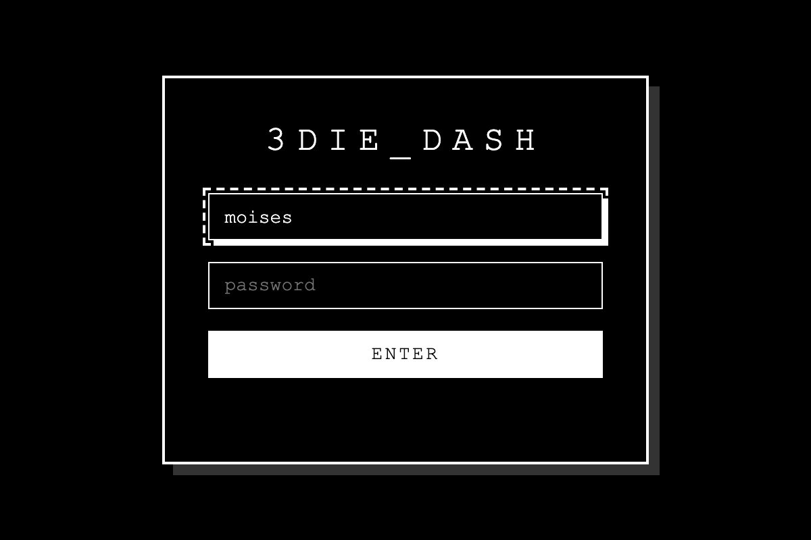
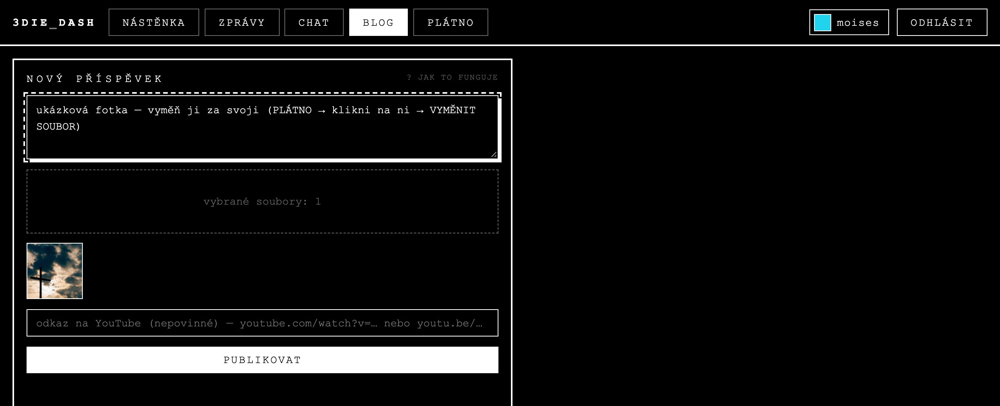
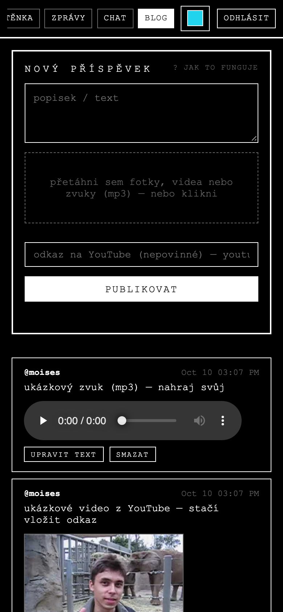
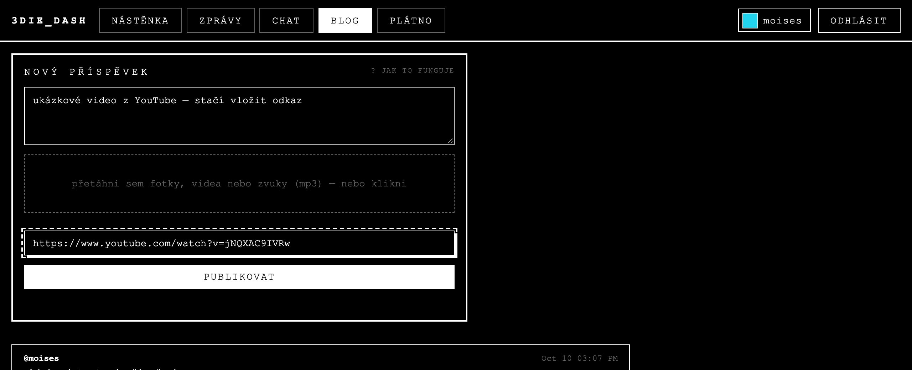
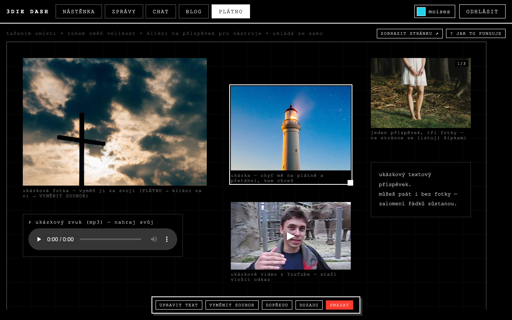
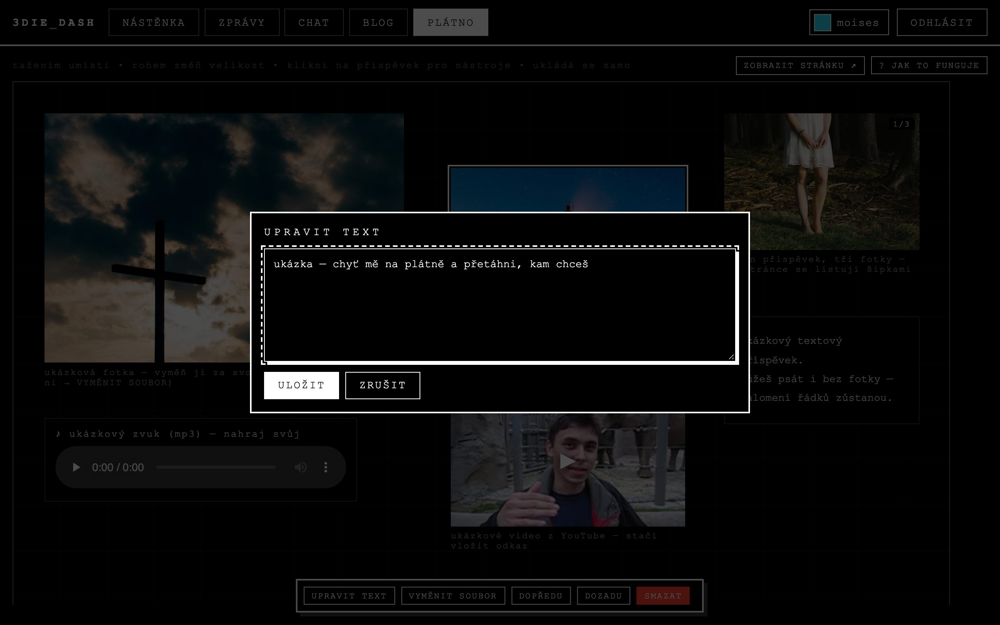
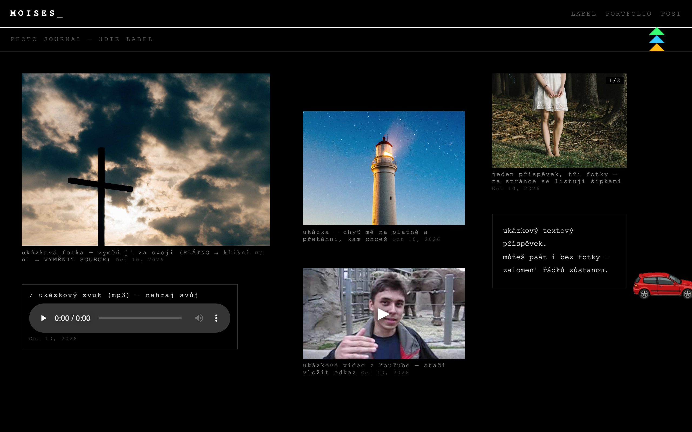
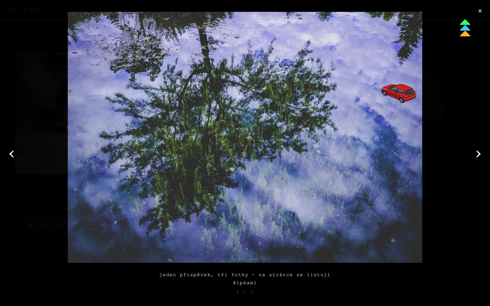
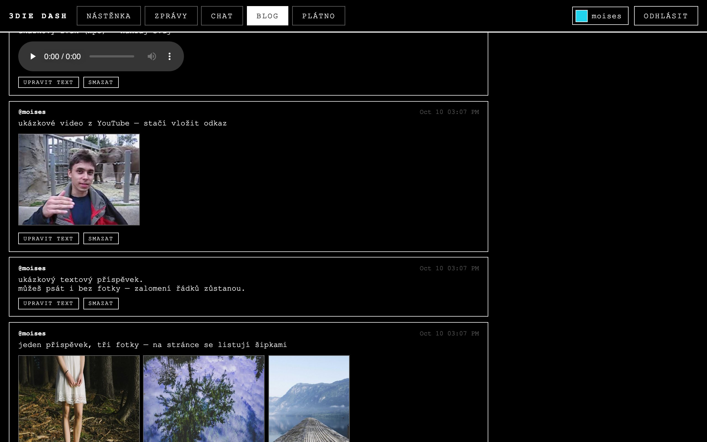

Jak přidávat příspěvky
Tvoje stránka 3die.fr/moises.html je hotová a čeká na tebe. Všechno se dělá tady v dashboardu: nahraješ to v záložce BLOG a rozmístíš na PLÁTNĚ. Co vidíš na plátně, uvidí lidi na stránce.
Otevřít dashboard Moje stránka ↗01 Přihlášení
Jdi na dash.3die.fr a přihlas se jménem moises a heslem, které ti dal iori. Přihlášení vydrží 30 dní.
Heslo si pak změň: klikni vpravo nahoře na svoje jméno → ZMĚNA HESLA. Tam si můžeš přepnout i jazyk (čeština / angličtina).

02 Nový příspěvek
Otevři záložku BLOG. Jeden příspěvek může být:
- fotka, nebo víc fotek najednou: vyber jich víc, na stránce se pak listují šipkami,
- video (mp4 / mov),
- zvuk (mp3, m4a, wav): na stránce se zobrazí jako přehrávač,
- jen text: nech soubory prázdné a napiš text, zalomení řádků zůstanou.
Postup: napiš popisek (nepovinné) → klikni do čárkovaného rámečku a vyber soubory (na počítači je tam můžeš i přetáhnout) → PUBLIKOVAT. Během nahrávání ukazuje tlačítko, co se děje, a pod ním běží proužek.

Fotky z mobilu se před nahráním samy zmenší na rozumnou velikost (nejdelší strana 3200 px) a otočí správně. Na stránce pak nic nečeká na 12 MB originál.

03 Video z YouTube
Do pole odkaz na YouTube vlož odkaz na video, jakýkoli tvar: youtube.com/watch?v=…, youtu.be/… i shorts/…. Na stránce se ukáže náhled s ▶ a po kliknutí se video přehraje přes celou obrazovku.
Odkaz můžeš dát i k fotkám: pak se video přehraje jako poslední položka po fotkách.

04 Plátno: rozmístění a úpravy
Záložka PLÁTNO je tvoje stránka v editoru. Každý nový příspěvek se sám položí na první volné místo nahoře. Pak:
- přetáhni příspěvek, kam chceš,
- bílý čtvereček v pravém dolním rohu vybraného příspěvku mění velikost,
- klikni na příspěvek a dole se objeví nástroje:
| tlačítko | co dělá |
|---|---|
| UPRAVIT TEXT | změní popisek nebo text příspěvku |
| VYMĚNIT SOUBOR | dá tam jinou fotku / video / zvuk; místo, velikost i popisek zůstanou |
| VYMĚNIT ODKAZ | u YouTube příspěvku vloží jiné video |
| DOPŘEDU / DOZADU | když se příspěvky překrývají, určí, který je navrchu |
| SMAZAT | smaže příspěvek ze stránky (zeptá se) |
Všechno se ukládá samo, hned. Tlačítko ZOBRAZIT STRÁNKU ↗ otevře výsledek.


Plátno je široké 1200 px, takže se nejlíp rovná na počítači. Na mobilu jde nahrávat bez omezení. Rozmisťovat se tam dá taky, jen je to stísněnější.
05 Jak to vypadá na stránce
Stránka ukazuje příspěvky přesně tam, kam jsi je dal na plátně. Kurzor je auto, které za sebou nechává stopy pneumatik. Kliknutím na fotku se otevře přes celou obrazovku: u víc fotek listuješ šipkami ← → nebo na mobilu tahem prstu, Esc zavře.


06 Ukázkové příspěvky
Na tvojí stránce už je šest ukázek (fotka, víc fotek, text, YouTube, zvuk), ať vidíš, že všechno funguje. Jsou tvoje: na plátně je vyměň za svoje věci (VYMĚNIT SOUBOR / UPRAVIT TEXT), nebo je smaž. Fotky v ukázkách jsou náhodné ilustrační obrázky.

07 Formáty a tipy
| co | formáty | pozn. |
|---|---|---|
| fotky | jpg, png, webp, gif, heic z iPhonu | HEIC se před nahráním převede na jpg (iPhone to při výběru fotky většinou udělá sám). Chrome na počítači HEIC přečíst neumí a napíše ti to. Pak fotku nejdřív vyexportuj jako JPEG. |
| video | mp4, mov, webm | max 50 MB na soubor. Delší videa dej radši na YouTube a vlož odkaz. |
| zvuk | mp3, m4a, wav, ogg | max 50 MB |
| YouTube | jakýkoli odkaz na video | jiné weby (Vimeo, Instagram…) zatím ne |
| text | až 4000 znaků | zalomení řádků zůstanou |
Kdyby něco nešlo, pošli screenshot ioriovi do CHATU v dashboardu.